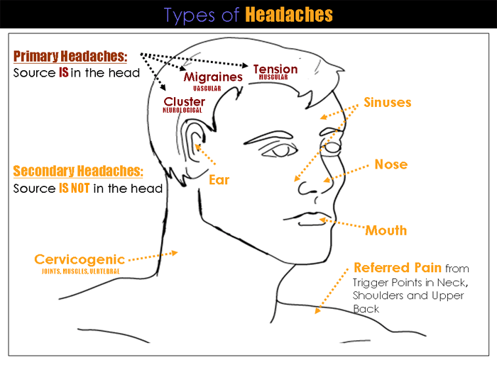

Head Ache
The traditional Ayurveda healers, or Vaidyas, would say your headache is a wake up call.
And while it is our intention to relieve this suffering it is also an opportunity to take a deeper
look into our physical body as well as our current emotional state.
There are many types of head and facial pain that fall under the category of headache. For most of us, headaches come
and go, and we often can figure out the trigger (certain foods, outdoors in cold or heat, nervousness, etc). Not all
headaches are an issue, but for recurrent ones, or headaches that are severe in nature, we need to pay attention and
determine the root cause.
What are the causes of headaches?
There are a few major causes of headaches mentioned below-
Excessive consumption of alcohol
High usage of mobile phones, TV, laptops etc.
Poor sleeping patterns
Stress and depression
Medication of other diseases
Light and sound sensitivity
Smoking
Poor posture while sleeping
Bad lifestyle and routine
Insomnia
Other underlying diseases include high cholesterol, hypertension, brain diseases etc.
Atmospheric change
Dos and don’ts for headaches:
Avoid the consumption of alcohol
>Quit smoking and tobacco products
Regulate the usage of mobile phones, TV, laptops, and computer
Do not hear music or anything in a high decibel
Do not sleep late at nights
Take minimum of 8 hours of sleep in a good posture
Maintain the stress in life
Drink herbal tea
Follow a certain routine
Drink ample amount of water minimum 8 glasses a day
Limit the intake of caffeine
Ignore the environment around you
Do the things which you love to do
Consume the healthy food
Yoga is a must to reduce headaches
Sleep early in the night
Home remedies for headaches
Follow the home remedies for headaches to reduce the headaches at home in a very less time
First home remedy for headache
Ingredients: cloves, sugar, and water
Step 1: Take 5 cloves and crush them to make a good powder
Step 2: Take a glass of water and boil it with the crushed cloves till water become half of its initial quantity.
Step 3: Strain the liquid using a sieve and mix half a spoon of sugar.
Instruction: Mix the sugar properly and wait till it turns comfortably warm to drink. This is one of the best home remedies for headaches, it gives instant relief from headaches.
Second-home remedy for headache
Ingredients: Ginger, Basil leaves, and a cup of water
Step 1: Take one cup of water, add 8 basil leaves with grated ginger and boil it.
Step 2: Pour the liquid into the cup along with the leaves and ginger, wait for 5 minutes to cool it.
Instruction: Drink this tea regularly two to three times a day.
Third home remedy for headache
Ingredients: Few neem leaves, pinch of turmeric powder, 2 amla balls, small grated pieces of ginger, and a glass of water.
Instruction: Mix all the ingredients properly into the water and boil it. Drink a warm mixture to get instant relief from headaches.
Fourth home remedy for headache
Ingredients: Lavender oil and sesame oil
Instruction: Massage your forehead and temple with the oil.
Fifth home remedy for headache
Ingredients: ¼ cup of beetroot juice, ¼ cup of cucumber juice, and ½ cup of carrot juice
Instruction: Mix all these ingredients and drink this mixture to get relief from headaches.
5 Tips for headache relief
Drink hot chamomile tea regularly
Stay in dark and silence
Eat magnesium-rich food such as green leafy vegetables, almonds, sunflower seeds, bananas, oats, and drink coconut water.
Put an icepack on your forehead and the neck while headache.
Drink warm ginger and clove tea for frequent relief from headaches.
References-https://www.ayurwakeup.com/headache/